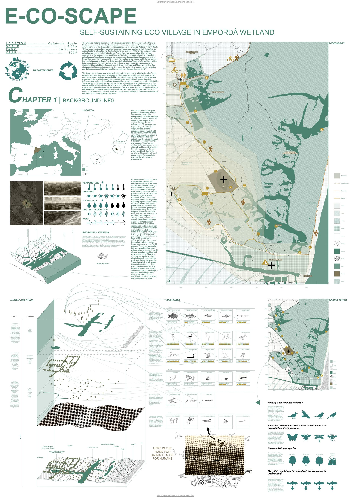
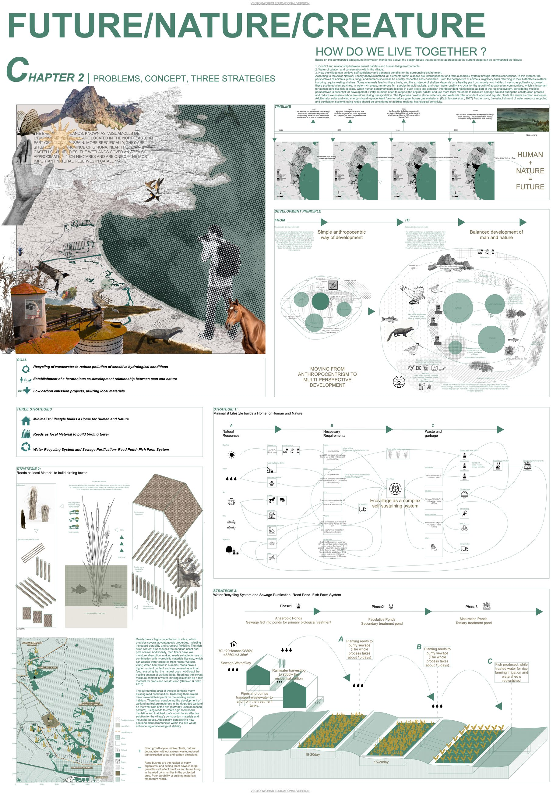
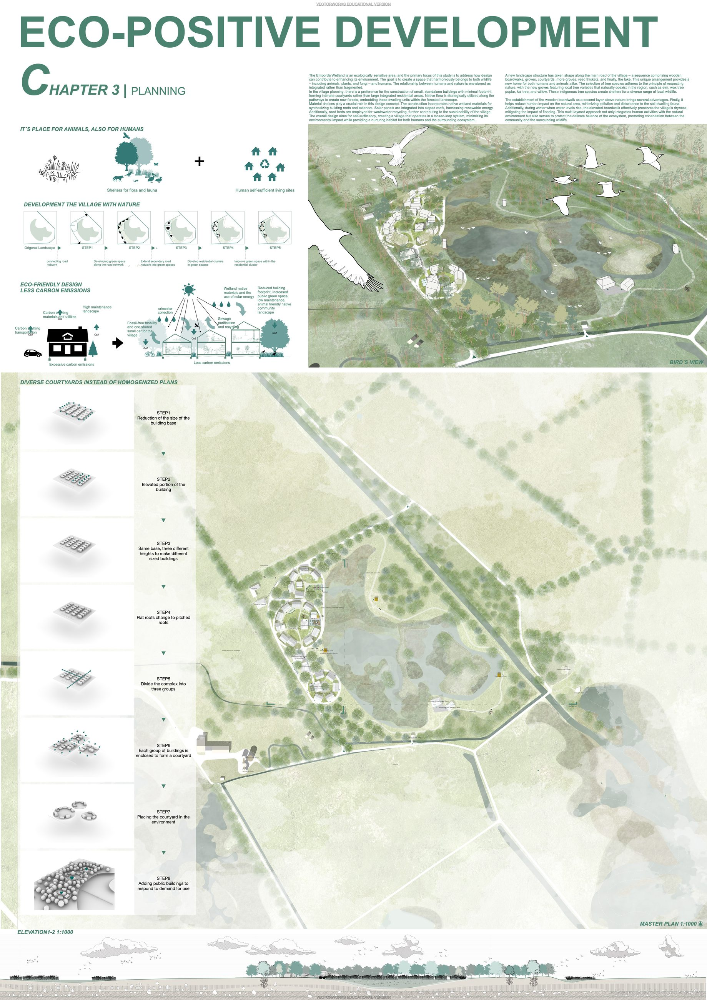
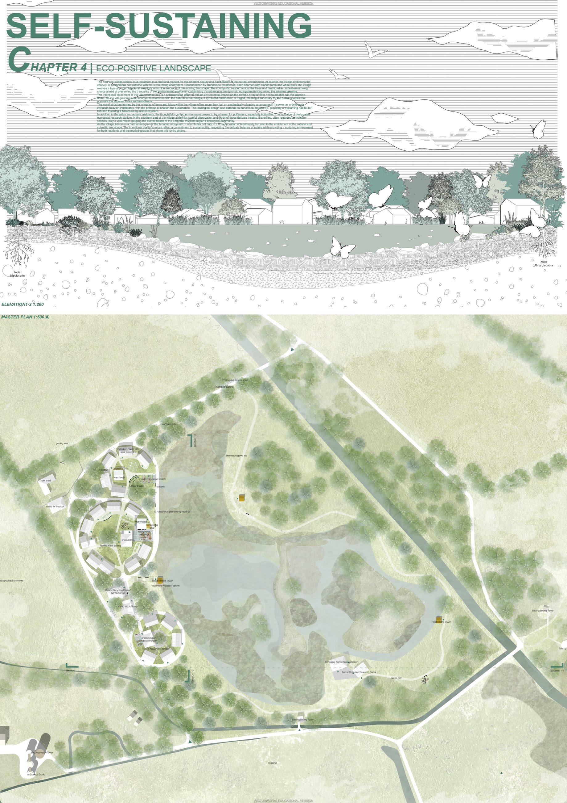
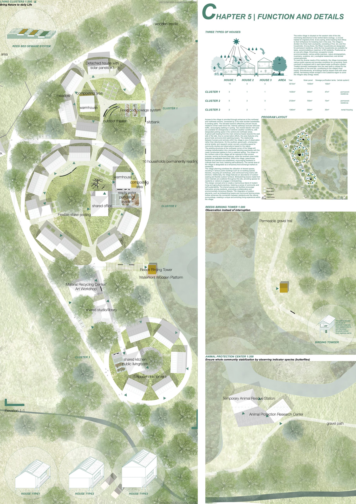
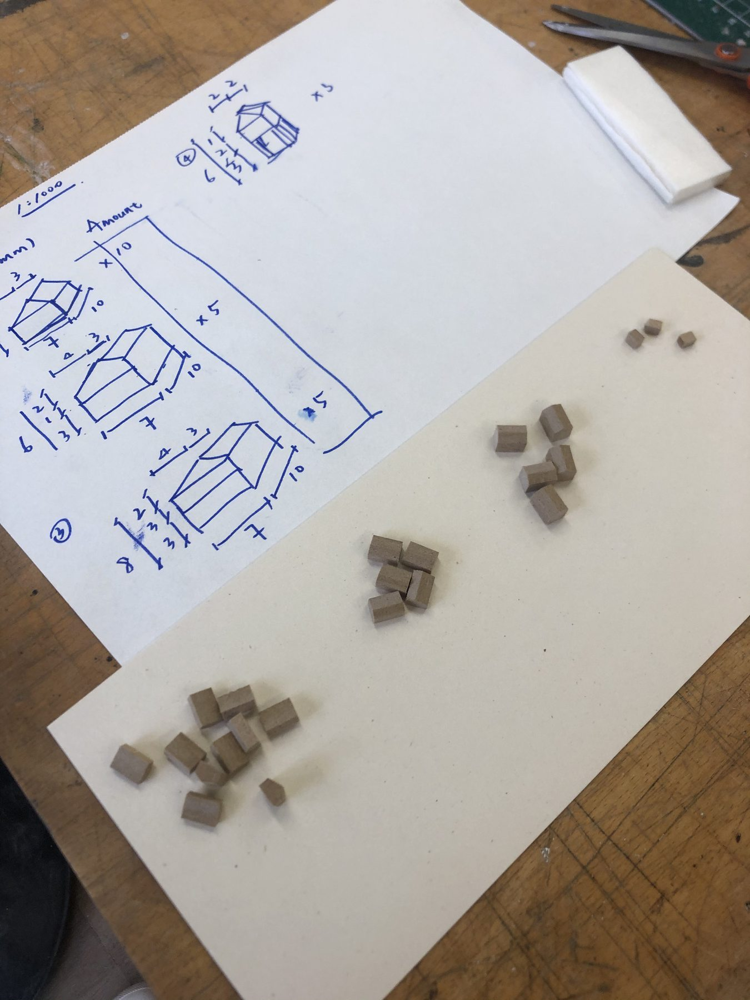
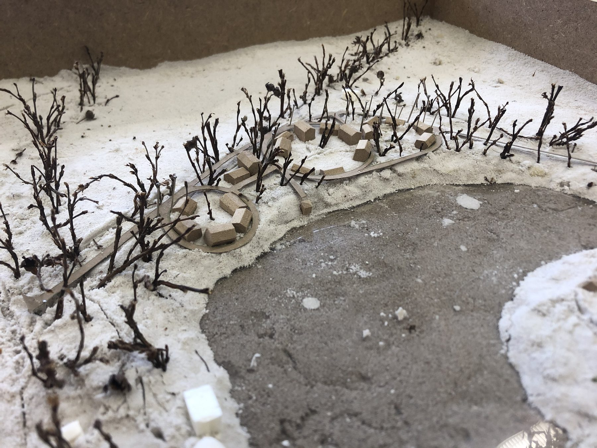
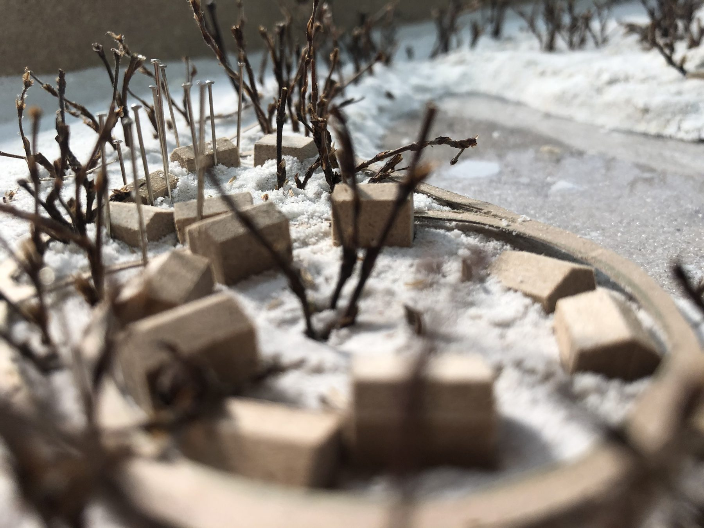

Water Systems
Using wetland conditions as a spatial and ecological driver.
Ecology / Settlement strategy

A settlement-scale landscape strategy for a self-sustaining eco village in Emporda Wetland, exploring how ecological infrastructure, productive landscapes, and climate-adapted open spaces can support a more biodiversity-positive way of living.
The project connects regional research, hydrological conditions, habitat networks, local materials, clean energy, food production, and everyday public space into one landscape-led framework for humans and other ecological actors.
Using wetland conditions as a spatial and ecological driver.
Connecting habitat, planting, and low-impact settlement patterns.
Integrating food production and self-sufficient landscape systems.
Shaping resilient open spaces through ecological and microclimatic thinking.







